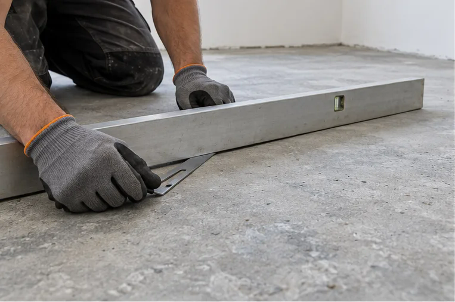
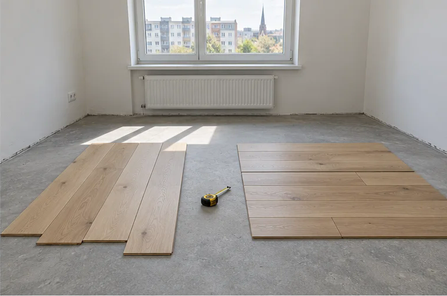
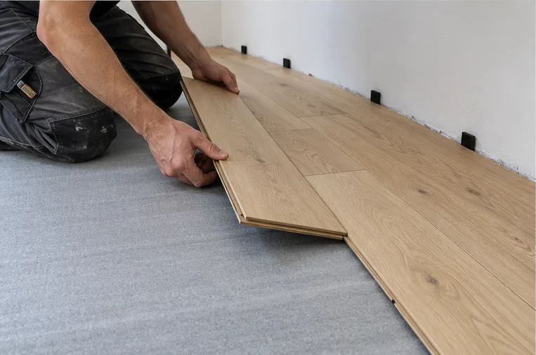
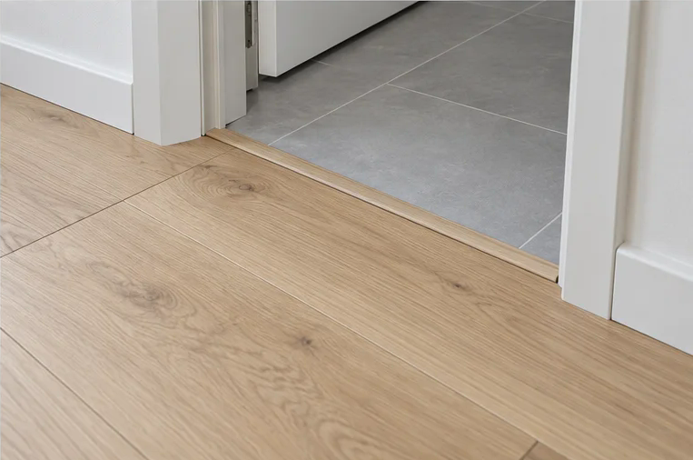

Parketi paigaldus
Laudparketi paigaldus ettevalmistatud aluspõrandale.
Vaata lähemaltParketi paigaldus / Tallinn ja Harjumaa
Parketi ja laminaadi paigaldus Tallinnas
ning Harjumaal. Aluspinnast viimase liistuni.

01 / Meie teenused
Ühtne tulemus sünnib tööde õigest järjekorrast.
Vali oma ruumile vajalik lahendus.
Laudparketi paigaldus ettevalmistatud aluspõrandale.
Vaata lähemaltMustri planeerimine ja kalasabaparketi paigaldus.
Vaata lähemaltAluspõranda seisukorra hindamine ja tööde kokkuleppimine.
Vaata lähemaltLiistude lõikamine ja paigaldus kokkulepitud mahus.
Vaata lähemalt03 / Koostöö sammud
Arutame läbi ruumi, materjali ja soovitud tulemuse.
Hea põrand algab tasase ja sobiva aluspõranda hindamisest.
Lauasuund, muster ja ühenduskohad moodustavad terviku.
Liistud ja üleminekud annavad põrandale lõpetatud ilme.
04 / Materjal ja meeleolu
Renoveeri Kodu tööfoto
Renoveeri Kodu tööprotsess
Renoveeri Kodu tööprotsess
Tööde järjekord

Kontrollime tasasust ja stabiilsust. Hindame niiskust ja vajalikku ettevalmistust.

Planeerime lauasuuna, mustri, materjalivaru ja ühenduskohad.

Paigaldame katte tootja juhiste järgi ning jätame nõutud paisumisvuugid.

Viimistleme servad, paigaldame liistud ning kontrollime uksi ja üleminekuid.
Tööetappide illustratsioonid: Renoveeri Kodu.
Materjalivalik

Naturaalse puidu soe välimus sobib elutuppa ja magamistuppa. Hilisem lihvimine sõltub väärispuidust kulumiskihi paksusest.
Proovi toone ja mustreid ↗
Kulumiskindel ja lihtsasti hooldatav valik. Kööki või esikusse vali tootja poolt niiskuskindlaks märgitud toode.
Proovi toone ja mustreid ↗
Sobib sageli kööki ja esikusse. Veekindlus sõltub tootest, ühendustest ja paigaldusest; aluspind peab olema eriti sile.
Proovi toone ja mustreid ↗
Pika elueaga ja korduvalt taastatav materjal. Paigaldusviis ja põrandakütte sobivus tuleb tootja juhendi järgi üle kontrollida.
Proovi toone ja mustreid ↗Küsimused ja vastused
Parketi ja laminaadi paigaldust, aluspinna ettevalmistust ning parketi parandustöid pakume Tallinnas ja Harjumaal. Objekti asukoht ja tööde ulatus täpsustatakse päringus.
Hind sõltub pindalast, paigaldusmustrist, aluspinna seisukorrast, vana katte eemaldamisest, liistudest ja üleminekutest. Täpne hind ja töömaht lepitakse kokku pakkumises.
Sobivus sõltub konkreetsest põrandakattest ja alusmaterjalist. Kontrollida tuleb tootja lubatud temperatuuri, soojustakistust ning aluspinna niiskust.
Aklimatiseerimise aeg sõltub tootja juhendist. Paljude laminaatide puhul on tavapärane vähemalt 48 tundi, kuid määrav on konkreetse toote juhend ja ruumi sisekliima.
Üksiku täkke või lohu korral võib sobida kuumvahaga kohtparandus. Kulunud viimistlusega puitparketti saab mõnikord lihvida; võimalus sõltub kulumiskihi paksusest ja põranda seisukorrast. Laminaati ja LVT-d ei lihvita.
Lisa pindala, põrandakatte tüüp, objekti asukoht, soovitud aeg ning ruumi ja aluspinna fotod. Kahjustuse puhul lisa üldvaade ja lähivõte. Fotod saad edastada e-postiga.
Sinu kodu järgmine samm
Räägi oma ruumist ja soovitud põrandast.
Aitame lähteülesande selgeks teha.
Saada oma põranda mõõdud ja soovid, et saaksime koostada pakkumise.